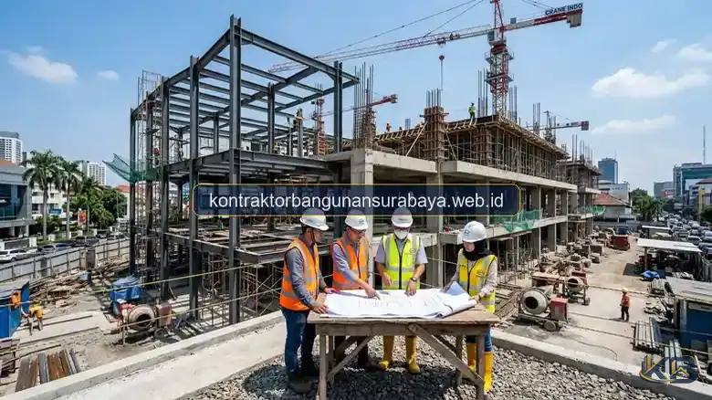

1. Siapa Kontraktor Gedung Komersial Tepercaya di Jawa Timur?
Kontraktor gedung komersial yang tepercaya di Jawa Timur umumnya memiliki legalitas usaha yang jelas, pengalaman menangani proyek skala menengah hingga besar, serta kemampuan mengelola tim multidisiplin mulai dari struktur hingga MEP.
kontraktorbangunansurabaya.web.id melayani jasa konstruksi dan renovasi gedung komersial di Surabaya dengan pendekatan kerja yang transparan dan terstruktur, baik untuk pembangunan gedung dan komersial, ruko, perkantoran, pusat bisnis, hingga tahapan perencanaan awal melalui layanan desain arsitektur dan RAB detail.
Kompleksitas Proyek Komersial vs Proyek Residensial
Pembangunan gedung komersial menuntut standar rekayasa struktur beban dinamis yang lebih berat, integrasi jalur MEP kompleks (HVAC, genset, sistem proteksi kebakaran hidran & sprinkler), serta kepatuhan ketat terhadap audit kelaikan fungsi gedung perkotaan.
2. Kriteria Legalitas dan Klasifikasi Usaha Kontraktor Gedung
Kontraktor yang menangani proyek gedung komersial idealnya memiliki klasifikasi usaha konstruksi yang sesuai skala bangunan yang dikerjakan, karena proyek gedung bertingkat memiliki kompleksitas dan risiko yang berbeda dibanding proyek rumah tinggal sederhana.
Pengalaman menangani perizinan skala komersial, seperti PBG untuk bangunan non-hunian dan SLF, juga menjadi indikator penting, mengingat proses perizinan gedung komersial cenderung lebih kompleks dan membutuhkan pemahaman regulasi yang lebih mendalam dibanding perizinan rumah tinggal.
| Aspek Legalitas & Teknis | Standar Rumah Tinggal | Standar Gedung Komersial | Peran Kontraktor Ahli |
|---|---|---|---|
| Klasifikasi Izin Usaha | NIB Usaha Perorangan/Kecil | SBU Konstruksi Gedung (BG004/BG009) | Menjamin legalitas badan hukum berbadan PT/CV resmi |
| Perizinan Bangunan | PBG Hunian Sederhana | PBG Gedung Usaha + Rekom Damkar | Penyusunan gambar DED & kajian teknis ke dinas |
| Sertifikasi Kelaikan | Opsional pada rumah | Wajib SLF (Sertifikat Laik Fungsi) | Pelaksanaan uji fungsi MEP, beban struktur, & as-built |
| Sistem Keselamatan | K3 Mandiri Sederhana | SMKK & Standar K3 Konstruksi SNI | Petugas K3 bersertifikat di lokasi proyek secara penuh |
3. Kemampuan Mengelola Tim Multidisiplin dalam Satu Proyek
Proyek gedung komersial melibatkan banyak disiplin kerja sekaligus, mulai dari tim struktur, tim MEP, tim finishing, hingga tim keselamatan kerja, sehingga kontraktor yang berpengalaman perlu memiliki kemampuan koordinasi yang baik agar seluruh tim dapat bekerja secara sinkron tanpa saling menghambat.

Ketersediaan sistem pelaporan progres yang terstruktur, seperti kurva S dan laporan mingguan, juga menjadi ciri kontraktor yang terbiasa menangani proyek berskala lebih besar, dibanding kontraktor yang hanya mengandalkan komunikasi informal tanpa dokumentasi yang jelas.
Integrasi Divisi Kerja
- Tim Rekayasa Struktur: Pondasi tiang pancang/bore pile, kolom baja WF/beton bertulang, & plat lantai.
- Tim Mekanikal Elektrikal: Instalasi panel daya, tata udara HVAC, pipa plambing, lift, & genset cadangan.
- Tim Finishing & Fasad: Dinding partisi, ACP (Aluminium Composite Panel), kaca curtain wall, & plafon akustik.
Manajemen Waktu & Logistik
- Monitoring Kurva S: Evaluasi deviasi rencana bobot kerja vs realisasi riil mingguan.
- Rantai Pasok Terjadwal: Pasokan beton ready mix, baja, dan material tepat waktu mencegah idle cost.
- Dokumentasi Opname: Berita Acara Progres Fisik sebagai acuan penagihan termin transparan.
Kemampuan menangani hubungan dengan berbagai pemasok material dalam volume besar, termasuk negosiasi harga dan jadwal pengiriman, juga menjadi nilai tambah kontraktor berpengalaman, mengingat proyek gedung komersial membutuhkan koordinasi logistik yang lebih kompleks dibanding proyek rumah tinggal.
4. Portofolio dan Pendekatan Kerja Transparan dari kontraktorbangunansurabaya.web.id
Portofolio proyek gedung komersial yang pernah dikerjakan, baik berupa ruko, gedung perkantoran, maupun fasilitas komersial lain, menjadi salah satu cara paling konkret untuk menilai kapasitas sebuah kontraktor sebelum menandani kontrak kerja.
kontraktorbangunansurabaya.web.id menerapkan pendekatan kerja yang transparan sejak tahap penawaran, mencakup rincian RAB, jadwal pelaksanaan, dan skema pembayaran bertahap, sehingga pemilik proyek memiliki gambaran yang jelas mengenai keseluruhan proses sebelum proyek dimulai.
Prinsip Transparansi Konstruksi Komersial KBS:
- Spesifikasi Material Akurat: Merk, tipe, dan spesifikasi teknis material dicantumkan gamblang tanpa klausul tersembunyi.
- Skema Pembayaran Berbasis Progres: Penagihan hanya dilakukan setelah verifikasi bersama opname fisik di lapangan.
- Garansi Struktur & Pemeliharaan: Perlindungan garansi struktur tertulis pasca serah terima kunci (handover).
Kesediaan untuk diajak berdiskusi mengenai opsi desain dan material alternatif, tanpa memaksakan satu pendekatan tunggal, juga mencerminkan sikap profesional yang mengutamakan kepentingan dan kebutuhan spesifik pemilik proyek dibanding sekadar mengejar target penjualan paket layanan tertentu.
Untuk memahami cakupan layanan secara menyeluruh sebelum menunjuk kontraktor, baca kembali panduan mengenai kontraktor gedung komersial yang membahas spesifikasi struktur hingga proses perizinan gedung komersial secara mendalam di Jawa Timur.
Legalitas Aman & Investasi Bernilai Tinggi
Pastikan pembangunan gedung komersial Anda di Surabaya dan Jawa Timur dikerjakan oleh kontraktor berbadan hukum resmi dengan pengalaman lapangan teruji.
5. FAQ Seputar Kontraktor Gedung Komersial di Jawa Timur
6. Konsultasi Gratis Sekarang
Ingin berdiskusi lebih lanjut mengenai kebutuhan konstruksi bangunan Anda di Surabaya? Hubungi tim kami melalui WhatsApp di 0889-8964-3555 untuk konsultasi awal tanpa biaya bersama kontraktorbangunansurabaya.web.id.
Konsultasi WhatsApp di 0889-8964-3555Tim Ahli Konstruksi Gedung & Manajemen Proyek Kontraktor Bangunan Surabaya
Divisi Spesialis Perencanaan Struktur Gedung, Pembangunan Ruko & Kantor, Instalasi MEP Terintegrasi, serta Pengurusan Izin PBG/SLF di Surabaya & Jawa Timur.